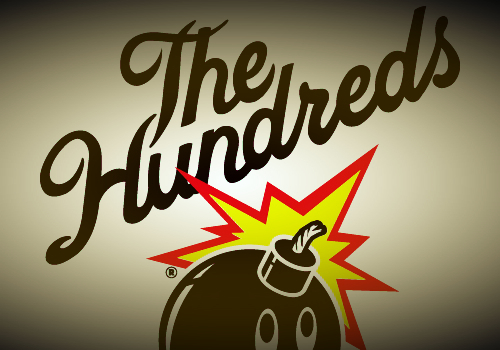

The Hundreds was originally founded in Los Angeles in 2003 by Bobby and Ben Hundreds as a men's apparel company and online magazine. Inspired by a California culture, the brand is considered a lifestyle project influenced by a variety of California's defining traits from punk to hip-hop, skateboarding to surf. Now sold worldwide, including 4 of its own flagship stores across the States, The Hundreds has expanded beyond apparel, accessories and headgear to a print magazine, a footwear collection and eyewear line.The Hundreds is the world’s first social merchandising company. Now in its 8TH year, the global brand is a 2-part lifestyle project that houses both a clothing line and online-magazine. Co-founded by Ben and Bobby Hundreds in 2003, both ends of The Hundreds incorporate our trademark attitude and personal perspective on street subculture, with an emphasis on people over product. The Hundreds apparel is inspired by LOS ANGELES LIFESTYLE / CALIFORNIA CULTURE and Southern California’s skateboarding, surf, punk, and hip-hop cultures. The design is reminiscent of 1980s surf-culture t-shirts, independent skateboard company apparel of the 1990s, and the advent of “streetwear” at the end of the millennium. The line is comprised of graphic t-shirts, denim, wovens, fleece, outerwear, headwear, and accessories. In late 2008, The Hundreds also launched a shoe program monikored The Hundreds Footware. And in 2009, The Hundreds’ optical program, The Hundreds Eyeware, debuted to the public.
To date, The Hundreds has worked on special collaborative projects with globally-recognized brands and artists like Disney, SE BMX, Garfield, DeLorean Motor Co., Forum Snowboards, Casio G-Shock, eS, Gravis, Medicom, David Choe, Jun Cha, Robbie Conal, Angelyne, H2O, Kurupt, Craola, Avail, and Usugrow. The Hundreds product is sold in limited quantities in the world’s most prestigious streetwear and skate boutiques and has also been featured as a cover story in such media as the Los Angeles Times, New York Times Magazine, DUB, Antenna, Giant Robot, KoreAm, MuchMusic Television, and Inc. Magazine.Currently, The Hundreds is stocked in over 400 accounts in every major city of the world. This includes The Hundreds’ four flagship retail locations in the Fairfax District of Los Angeles, The Hundreds store in San Francisco’s Union Square, The Hundreds New York in SoHo, and
The Hundreds Santa Monica. Within just 8 years’ time, The Hundreds Dotcom now generates traffic of over a million unique readers a month, the website incorporating interviews and blog content from within and around the street culture/industry. Aside from the core blog on the frontpage, there are also 5 sub-blogs on the website sidebar and our weekly podcast, ON BLAST! More than just an online magazine or clothing line, The Hundreds is a lifestyle project that remains personal and direct, reflective of the community and culture, and dedicated to its fanbase. The Hundreds is Huge.
| The Hundreds | Obey | Bathing Ape |